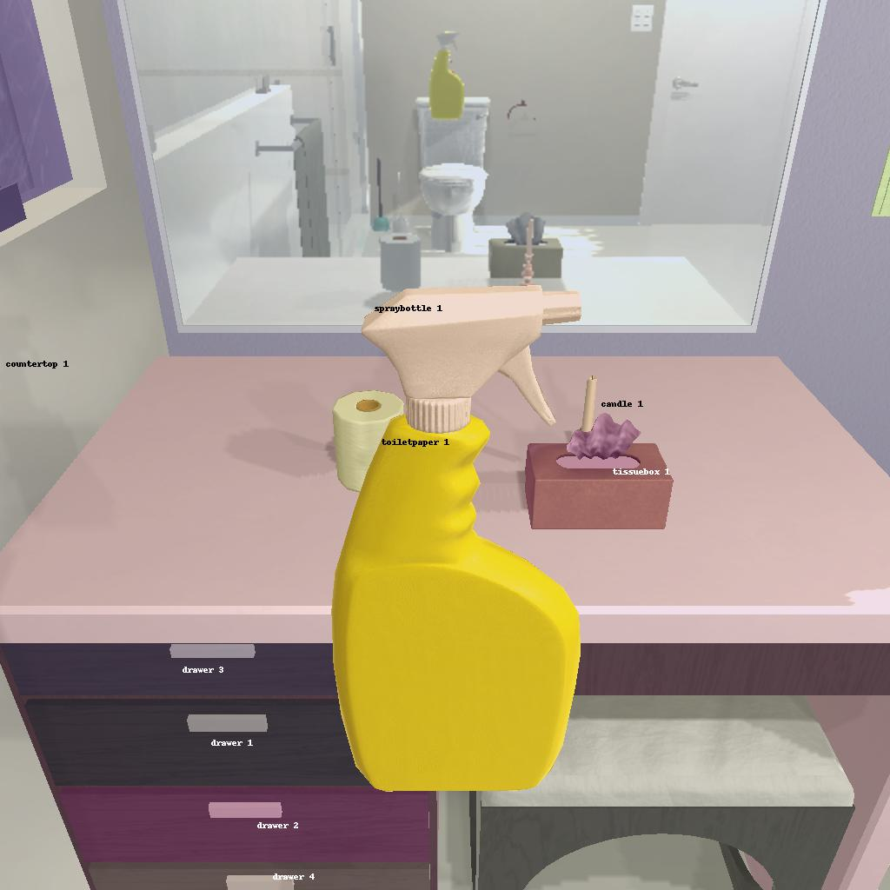

---------------------------------------------------------task: 28---------------------------------------------------------
--------------------------------------------------------------------------------------------------------------------------------------------------------------------
--------------------------------------------------------------------------------------------------------------------------------------------------------------------
Step:--------------------------------------------------------------------------8-------------------------------------------------------------------------------
----------------------------------------
VLM Prompt:
Image1:
Image2:
Image3:
**Instruction**
1. Analyze the provided image to identify all visible household objects, focusing on those relevant to the task description "put two spraybottle in toilet."
2. Use the analysis of the image and the task hint "The agent must find an object of the desired type, pick it up, find the correct location to place it, put it down there, then look for another object of the desired type, pick it up, return to previous location, and put it down there with the other object." to answer the question: what is the most reasonable action in the choices for the task description "put two spraybottle in toilet"?
4. Decide and write the answer using the template: The answer is: (i): , where i is the real number. If there is no desired object in the image, search every place based on **Initial Observation** to find the object. And if no one is exactly correct, choose a similar answer.
**Initial Observation**
You are in the middle of a room. Looking quickly around you, you can see bathtub (1), bathtubbasin (1), cart (1), sink (1), garbagecan (1), sinkbasin (1), countertop (1), drawer (1-4), toilet (1), toiletpaperhanger (1)
**Answer Choices**
(1): go to bathtub 1
(2): go to bathtubbasin 1
(3): go to cart 1
(4): go to sink 1
(5): go to garbagecan 1
(6): go to sinkbasin 1
(7): go to countertop 1
(8): go to drawer 3
(9): go to drawer 4
(10): go to toilet 1
(11): go to toiletpaperhanger 1
(12): open drawer 2
(13): close drawer 2
(14): put spraybottle 1 in/on drawer 2
(15): examine spraybottle 1
(16): examine drawer 2
**Answer**
Let's think step by step by following the instructions.
----------------------------------------
----------------------------------------
Original Response:
Firstly, we need to identify all visible household objects relevant to the task "put two spraybottle in toilet." From the initial observation and the provided images, we can see that there is one spraybottle visible on the countertop.
The next step is to follow the task hint, which suggests that the agent must find an object of the desired type, pick it up, find the correct location to place it, and put it down there. After that, the agent should look for another object of the desired type and repeat the process.
Given the task description and the initial observation, the most reasonable action from the choices provided would be to first go to the location where the visible spraybottle is located, pick it up, and then go to the toilet to place it.
In this case, the visible spraybottle is located on the countertop. So the first step towards completing the task would be to go to the countertop to pick up the spraybottle.
The answer is: (7): go to countertop 1
----------------------------------------
----------------------------------------
>>> Refine Original VLM Response and Get Pure Action: go to countertop 1
----------------------------------------
-----------------------------------------------------------------
Running time: 23.292117595672607 seconds
Total Money: 18.161150000000003
-----------------------------------------------------------------
-----------------------------------------------------------------
Text Observation:You arrive at loc 6. On the countertop 1, you see a tissuebox 1, a toiletpaper 1, a handtowel 1, and a candle 1.
-----------------------------------------------------------------
UNSUCCEED